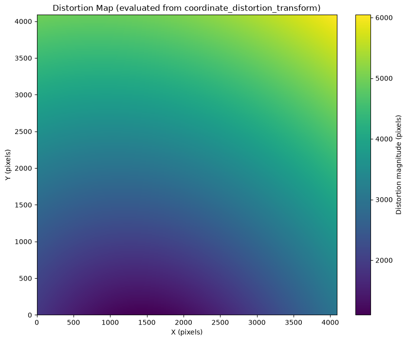
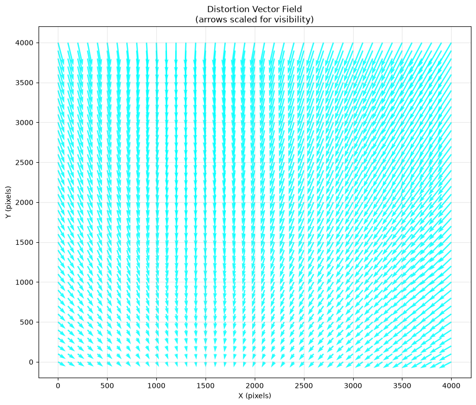

Understanding the Roman WFI Distortion Reference File#
Kernel Information and Read-Only Status#
To run this notebook, please select “Roman Research Nexus {VERSION}” kernel at the top right of your window. For example “Roman Research Nexus 2026.2”.
This notebook is read-only. You can run cells and make edits, but you must save changes to a different location. We recommend saving the notebook within your home directory, or to a new folder within your home (e.g. file > save notebook as > my-nbs/nb.ipynb). Note that a directory must exist before you attempt to add a notebook to it.
Introduction#
The purpose of this notebook is to understand the content and purpose of the Distortion (DISTORTION) reference file.
This file contains the astrometric distortion model used by the romancal.assign_wcs step to convert between detector coordinates and world (sky) coordinates. It is critical for accurate astrometry and mosaicking.
More details about this and other reference files can be found in the Reference File Information.
Local Run Settings#
If you want to run the notebook in your local machine, refer to the information in local installation instructions before proceeding with the notebook. The instructions provide important information about setting up your environment and installing dependencies.
Imports#
Libraries used:
astropy for image normalization
copy for making copies of Python objects
crds for access to calibration reference files
matplotlib and mpl_toolkits for plotting images
numpy for array manipulation
roman_datamodels for opening Roman WFI ASDF files
os for operating system functions
import os
from astropy.visualization import simple_norm
import copy
import matplotlib.pyplot as plt
from matplotlib import colors, colormaps as cm
from mpl_toolkits.axes_grid1 import make_axes_locatable
import numpy as np
import roman_datamodels as rdm
The Calibration Reference Data System (CRDS)#
The reference files, developed and validated by STScI’s Science Operations Center, are continually updated as new WFI data become available. For more information about how CRDS works and how it assigns the most appropriate reference file for each calibration step, refer to the notebook Understanding CRDS and How to Select Calibration Reference files.
IMPORTANT NOTE: Reference files are a work in progress and will be updated several times before Roman launch. If you notice irregularities or missing information, please understand that they may be a known issue. If you have questions, please contact the Roman Help Desk.
To make use of CRDS functionality, we need to import the whole package.
import crds
Now let’s dive into this reference file type.
Distortion Reference File#
The DISTORTION reference file is used in the assign_wcs step to model geometric distortions of the WFI optics. It is typically an Astropy CompoundModel containing polynomial or SIP (Simple Imaging Polynomial) transformations.
For more details, see the romancal assign_wcs documentation and Rdox documentation for the WCS assignment.
Before proceeding, let’s check the environmental variables set for CRDS
print(f"CRDS server location: {os.environ.get('CRDS_SERVER_URL')}")
print(f"CRDS context file: {os.environ.get('CRDS_CONTEXT')}")
CRDS server location: https://roman-crds.stsci.edu
CRDS context file: roman-edit
If we want to change the context, we can do it in the next cell. In this case, we choose context roman_0055.pmap.
os.environ['CRDS_CONTEXT']='roman_0055.pmap'
Retrieving Reference Files#
As you run the exposure pipeline, the most up-to-date reference files will be automatically selected for each step. However, if you would like to use a specific reference file, retrieve it using the CRDS Python API and feed it to the Exposure Level Pipeline, see the notebook Understanding CRDS and How to Select Calibration Reference files for more details.
For the REFPIX files, the required keywords are typically:
ROMAN.META.INSTRUMENT.NAMEROMAN.META.INSTRUMENT.DETECTORROMAN.META.INSTRUMENT.OPTICAL_ELEMENTROMAN.META.EXPOSURE.TYPEROMAN.META.EXPOSURE.START_TIME
These keywords may be combined into a single dictionary that is later fed to the crds.getrecommendations function. This function returns a dictionary of file names that match the criteria that you supply.
meta = {
'ROMAN.META.INSTRUMENT.NAME': 'WFI',
'ROMAN.META.INSTRUMENT.DETECTOR': 'WFI01',
'ROMAN.META.INSTRUMENT.OPTICAL_ELEMENT': 'F158',
'ROMAN.META.EXPOSURE.TYPE': 'WFI_IMAGE',
'ROMAN.META.EXPOSURE.START_TIME': '2026-01-01 00:00:00'
}
ref_files = crds.getreferences(meta, reftypes=['distortion'], observatory='roman')
ref_files
{'distortion': '/home/runner/crds_cache/references/roman/wfi/roman_wfi_distortion_0014.asdf'}
Examining Reference Files#
Reference files use roman_datamodels just like WFI science data products. Let’s take a closer look at the DISTORTION reference file:
dist = rdm.open(ref_files['distortion'])
dist.info(max_rows=200)
root (AsdfObject)
├─asdf_library (Software)
│ ├─author (str): The ASDF Developers
│ ├─homepage (str): http://github.com/asdf-format/asdf
│ ├─name (str): asdf
│ └─version (str): 3.5.0
├─history (AsdfDictNode)
│ ├─entries (AsdfListNode)
│ │ └─0 (HistoryEntry)
│ │ ├─description (str): This file was made using pysiaf version 0.22.0 and the Roman Science Instrument A (truncated)
│ │ └─time (datetime): 2024-06-14 05:04:03+00:00
│ └─extensions (AsdfListNode)
│ ├─0 (ExtensionMetadata)
│ │ ├─extension_class (str): asdf.extension._manifest.ManifestExtension
│ │ ├─extension_uri (str): asdf://asdf-format.org/core/extensions/core-1.5.0
│ │ ├─manifest_software (Software)
│ │ │ ├─name (str): asdf_standard
│ │ │ └─version (str): 1.1.1
│ │ └─software (Software)
│ │ ├─name (str): asdf-astropy
│ │ └─version (str): 0.6.1
│ ├─1 (ExtensionMetadata)
│ │ ├─extension_class (str): asdf.extension._manifest.ManifestExtension
│ │ ├─extension_uri (str): asdf://asdf-format.org/transform/extensions/transform-1.5.0
│ │ ├─manifest_software (Software)
│ │ │ ├─name (str): asdf_transform_schemas
│ │ │ └─version (str): 0.5.0
│ │ └─software (Software)
│ │ ├─name (str): asdf-astropy
│ │ └─version (str): 0.6.1
│ ├─2 (ExtensionMetadata)
│ │ ├─extension_class (str): asdf.extension._manifest.ManifestExtension
│ │ ├─extension_uri (str): asdf://stsci.edu/datamodels/roman/extensions/datamodels-1.0
│ │ ├─manifest_software (Software)
│ │ │ ├─name (str): rad
│ │ │ └─version (str): 0.21.0
│ │ └─software (Software)
│ │ ├─name (str): roman_datamodels
│ │ └─version (str): 0.21.0
│ └─3 (ExtensionMetadata)
│ ├─extension_class (str): asdf.extension._manifest.ManifestExtension
│ ├─extension_uri (str): asdf://astropy.org/astropy/extensions/units-1.0.0
│ └─software (Software)
│ ├─name (str): asdf-astropy
│ └─version (str): 0.6.1
└─roman (DistortionRef) # Distortion Reference Schema
├─meta (AsdfDictNode)
│ ├─author (str): Richard G Cosentino # Author
│ ├─description (str): This is a copy of the Geometric Distortion reference file on Roman CRDS Test and Op (truncated)
│ ├─input_units (IrreducibleUnit): pix
│ ├─instrument (AsdfDictNode)
│ │ ├─detector (str): WFI01
│ │ ├─name (str): WFI
│ │ ├─optical_element (str): F158
│ │ └─p_optical_element (str): F062|F087|F106|F129|F146|F158|F184|F213|GRISM|PRISM|DARK|
│ ├─origin (Origin): STSCI # Institution / Organization Name
│ ├─output_units (Unit): arcsec
│ ├─pedigree (str): GROUND # Pedigree
│ ├─reftype (str): DISTORTION
│ ├─telescope (Telescope): ROMAN # Telescope Name
│ └─useafter (Time): 2020-01-01T00:00:00.000 # Use After Date
└─coordinate_distortion_transform (CompoundModel) # Distortion Transform Model with inputs in "pixel" and (truncated)
The Distortion reference file contains metadata and an Astropy model - the Distortion Transform Model representing the transform from detector to the telescope V2, V3 system. Let’s inspect the model:
model = dist.coordinate_distortion_transform
print("=== Full Model Representation ===")
print(model)
print("\n=== Model Parameters ===")
print(model.parameters)
print("\n=== Model Components ===")
for i, submodel in enumerate(model):
print(f"Component {i}: {submodel}")
=== Full Model Representation ===
Model: CompoundModel
Inputs: ('x0', 'x1')
Outputs: ('y0', 'y1')
Model set size: 1
Expression: [0] & [1] | [2] & [3] | [4] | [5] & [6] | [7] | [8] & [9] | [10] & [11]
Components:
[0]: <Shift(offset=1.)>
[1]: <Shift(offset=1.)>
[2]: <Shift(offset=-2044.5)>
[3]: <Shift(offset=-2044.5)>
[4]: <Mapping((0, 1, 0, 1))>
[5]: <Polynomial2D(5, c0_0=0., c1_0=0.11034133, c2_0=-0.00000003, c3_0=-0., c4_0=0., c5_0=-0., c0_1=0.00034168, c0_2=-0.00000001, c0_3=-0., c0_4=-0., c0_5=0., c1_1=0.00000014, c1_2=-0., c1_3=0., c1_4=0., c2_1=0., c2_2=-0., c2_3=-0., c3_1=0., c3_2=-0., c4_1=-0.)>
[6]: <Polynomial2D(5, c0_0=0., c1_0=0.00031436, c2_0=0.00000007, c3_0=0., c4_0=0., c5_0=-0., c0_1=0.10828278, c0_2=0.00000021, c0_3=-0., c0_4=0., c0_5=0., c1_1=-0.00000002, c1_2=-0., c1_3=-0., c1_4=0., c2_1=-0., c2_2=-0., c2_3=0., c3_1=-0., c3_2=-0., c4_1=-0.)>
[7]: <Mapping((0, 1, 0, 1))>
[8]: <Polynomial2D(1, c0_0=0., c1_0=-0.5, c0_1=-0.8660254)>
[9]: <Polynomial2D(1, c0_0=0., c1_0=-0.8660254, c0_1=0.5)>
[10]: <Shift(offset=1312.94914525)>
[11]: <Shift(offset=-1040.78537268)>
Parameters:
offset_0 offset_1 offset_2 ... offset_10 offset_11
-------- -------- -------- ... ------------------ -------------------
1.0 1.0 -2044.5 ... 1312.9491452484797 -1040.7853726755036
=== Model Parameters ===
[ 1.00000000e+00 1.00000000e+00 -2.04450000e+03 -2.04450000e+03
0.00000000e+00 1.10341331e-01 -3.35571351e-08 -2.29362292e-12
8.20319019e-17 -2.90103937e-19 3.41677995e-04 -6.87271700e-09
-1.16544111e-12 -6.37122491e-16 5.32863996e-19 1.41734225e-07
-4.15180041e-12 3.34872620e-16 3.13112738e-19 1.62946239e-12
-2.34394300e-16 -3.81079935e-19 3.48172159e-17 -5.53195157e-19
-1.35222949e-19 0.00000000e+00 3.14358089e-04 7.08263577e-08
6.74523730e-13 1.54145185e-16 -4.01625396e-20 1.08282785e-01
2.09755445e-07 -8.03593438e-12 8.71633548e-17 7.30668787e-19
-1.93540277e-08 -4.67602009e-13 -1.39311602e-16 2.49144269e-19
-4.32065839e-12 -3.28947619e-16 1.76534900e-19 -5.76481865e-16
-2.23613324e-19 -4.08245487e-19 0.00000000e+00 -5.00000000e-01
-8.66025404e-01 0.00000000e+00 -8.66025404e-01 5.00000000e-01
1.31294915e+03 -1.04078537e+03]
=== Model Components ===
Component 0: Model: Shift
Inputs: ('x',)
Outputs: ('y',)
Model set size: 1
Parameters:
offset
------
1.0
Component 1: Model: Shift
Inputs: ('x',)
Outputs: ('y',)
Model set size: 1
Parameters:
offset
------
1.0
Component 2: Model: Shift
Inputs: ('x',)
Outputs: ('y',)
Model set size: 1
Parameters:
offset
-------
-2044.5
Component 3: Model: Shift
Inputs: ('x',)
Outputs: ('y',)
Model set size: 1
Parameters:
offset
-------
-2044.5
Component 4: Model: Mapping
Inputs: ('x0', 'x1')
Outputs: ('x0', 'x1', 'x2', 'x3')
Model set size: 1
Parameters:
Component 5: Model: Polynomial2D
Inputs: ('x', 'y')
Outputs: ('z',)
Model set size: 1
Degree: 5
Parameters:
c0_0 c1_0 ... c3_2 c4_1
---- ------------------- ... ---------------------- ----------------------
0.0 0.11034133100022436 ... -5.531951570764015e-19 -1.352229485686321e-19
Component 6: Model: Polynomial2D
Inputs: ('x', 'y')
Outputs: ('z',)
Model set size: 1
Degree: 5
Parameters:
c0_0 c1_0 ... c3_2 c4_1
---- --------------------- ... ----------------------- -----------------------
0.0 0.0003143580894818263 ... -2.2361332392891536e-19 -4.0824548670751734e-19
Component 7: Model: Mapping
Inputs: ('x0', 'x1')
Outputs: ('x0', 'x1', 'x2', 'x3')
Model set size: 1
Parameters:
Component 8: Model: Polynomial2D
Inputs: ('x', 'y')
Outputs: ('z',)
Model set size: 1
Degree: 1
Parameters:
c0_0 c1_0 c0_1
---- ------------------- -------------------
0.0 -0.5000000000000001 -0.8660254037844386
Component 9: Model: Polynomial2D
Inputs: ('x', 'y')
Outputs: ('z',)
Model set size: 1
Degree: 1
Parameters:
c0_0 c1_0 c0_1
---- ------------------- ------------------
0.0 -0.8660254037844386 0.5000000000000001
Component 10: Model: Shift
Inputs: ('x',)
Outputs: ('y',)
Model set size: 1
Parameters:
offset
------------------
1312.9491452484797
Component 11: Model: Shift
Inputs: ('x',)
Outputs: ('y',)
Model set size: 1
Parameters:
offset
-------------------
-1040.7853726755036
Basic Statistics#
We can also get some basic statistics. First let’s evealuate the model on a representative grid,
# Evaluate the model on a grid to create distortion maps
# (downsampled for speed)
ny, nx = 4088, 4088
step = 10 # adjust for resolution vs speed
y, x = np.mgrid[0:ny:step, 0:nx:step]
# Apply the model
x_corr, y_corr = model(x, y)
dx = x_corr - x
dy = y_corr - y
dist_mag = np.hypot(dx, dy)
print(f"Distortion magnitude range: {dist_mag.min():.4f} — {dist_mag.max():.4f} pixels")
Distortion magnitude range: 1097.2329 — 6044.2851 pixels
Now get some statistics on the distortion magnitude
print("Distortion statistics:")
print(f" Mean offset X: {dx.mean():.4f} pixels")
print(f" Mean offset Y: {dy.mean():.4f} pixels")
print(f" Max distortion: {dist_mag.max():.4f} pixels")
Distortion statistics:
Mean offset X: -726.8376 pixels
Mean offset Y: -3080.3934 pixels
Max distortion: 6044.2851 pixels
Visualizing the Distortion#
Now, let’s plot the distortion magnitude map (X and Y offsets) grid
# Plot distortion magnitude map
plt.figure(figsize=(10, 8))
plt.imshow(dist_mag, origin='lower', cmap='viridis', extent=[0, nx, 0, ny])
plt.colorbar(label='Distortion magnitude (pixels)')
plt.title('Distortion Map (evaluated from coordinate_distortion_transform)')
plt.xlabel('X (pixels)')
plt.ylabel('Y (pixels)')
plt.show()

Finally, let’s get a view as a vector field
# Vector field with strong scaling + normalization
plt.figure(figsize=(11, 9))
step_vec = 10 # adjust density
# Normalize vector length for visibility
scale_factor = 90000 # tune this number (higher = shorter arrows)
plt.quiver(x[::step_vec, ::step_vec],
y[::step_vec, ::step_vec],
dx[::step_vec, ::step_vec],
dy[::step_vec, ::step_vec],
scale=scale_factor,
color='cyan',
alpha=0.85,
width=0.003,
headwidth=3)
plt.title('Distortion Vector Field\n(arrows scaled for visibility)')
plt.xlabel('X (pixels)')
plt.ylabel('Y (pixels)')
plt.grid(True, alpha=0.3)
plt.show()

About this Notebook#
Author: R. Diaz
Updated On: 2026-07-06
| Top of page |
|
|